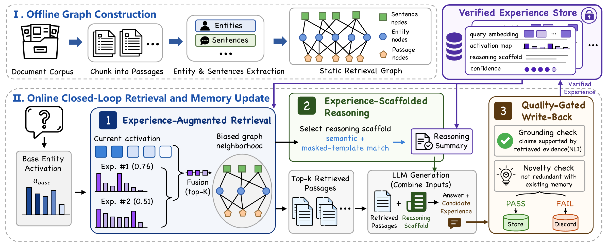

Findings of EMNLP 2026
LivingRAGAugmenting Graph RAG
with Experience
1 State Key Laboratory of Virtual Reality Technology and Systems,
Beihang University, Beijing, China
2 Hangzhou Innovation Institute, Beihang University, Hangzhou, Zhejiang, China
* Corresponding author
The idea
Abstract
Graph-based RAG improves multi-hop question answering by organizing evidence as a knowledge graph. However, most existing RAG systems process each query in isolation and discard useful reasoning from the LLM's response after inference. As a result, later related queries need to retrieve evidence and reason from scratch. We propose LivingRAG, a Graph RAG framework with writable and reusable reasoning experience. LivingRAG adds a writable experience store to a graph-based retrieval backbone, enabling verified experiences to be reused during inference in two ways. Stored graph signals help retrieval find entities and passages that were useful in earlier related queries. Stored summaries provide a reference reasoning pattern for answer generation. We analyze online QA streams and find reusable signals from shared entities, graph neighborhoods, and question templates. Experiments on multi-hop QA benchmarks show that LivingRAG improves accuracy over strong RAG baselines and reduces completion-token use when relevant prior experience is reused.
Method
Retrieve. Reason. Remember.
LivingRAG extends a static graph retriever with a writable experience store. Verified experience guides both evidence retrieval and answer generation.

Experience-augmented retrieval
Stored activation maps guide graph retrieval toward evidence neighborhoods that helped answer earlier related queries.
Scaffolded generation
A relevant reasoning summary provides a reference pattern alongside the retrieved passages.
Quality-gated write-back
New experiences enter the store only after grounding and novelty checks, keeping unsupported or redundant reasoning out.
Experiments
Accuracy across QA benchmarks
LivingRAG achieves the highest accuracy in the reported comparisons. Each dataset run starts with an empty experience store; only earlier queries can contribute experience to later queries.
Scroll horizontally to view all benchmarks.
| Method | 2Wiki | HotpotQA | MuSiQue | MuSiQue-full | WixQA | ||||
|---|---|---|---|---|---|---|---|---|---|
| Cont.-Acc. | LLM-Acc. | Cont.-Acc. | LLM-Acc. | Cont.-Acc. | LLM-Acc. | Cont.-Acc. | LLM-Acc. | LLM-Acc. | |
| Vanilla RAG (Top-5) | 58.80 | 59.40 | 65.20 | 77.10 | 34.00 | 43.70 | 27.35 | 41.33 | — |
| LightRAG | 60.60 | 48.20 | 62.20 | 71.70 | 39.20 | 49.10 | 29.83 | 44.89 | — |
| GFM-RAG | 75.50 | 77.80 | 72.50 | 86.10 | 42.70 | 52.50 | 37.28 | 47.75 | — |
| HippoRAG2 | 76.50 | 68.00 | 71.20 | 84.60 | 45.40 | 52.90 | 40.92 | 44.06 | — |
| LinearRAG | 79.60 | 84.40 | 72.90 | 86.80 | 48.50 | 60.70 | 41.00 | 52.71 | 66.00 |
| LivingRAG (Ours) | 82.70 | 87.00 | 73.20 | 88.00 | 50.80 | 64.40 | 44.39 | 58.42 | 70.25 |
Cont.-Acc.: Contain-Match Accuracy. LLM-Acc.: LLM-Evaluation Accuracy. Best results are bold; second-best results are underlined. WixQA is reported only for LinearRAG and LivingRAG; unavailable results are marked with —.
Citation
BibTeX
@misc{cui2026livingragaugmentinggraphrag,
title={LivingRAG: Augmenting Graph RAG with Experience},
author={Yuzhuo Cui and Zongye Zhang and Qingjie Liu},
year={2026},
eprint={2608.25960},
archivePrefix={arXiv},
primaryClass={cs.AI},
url={https://arxiv.org/abs/2608.25960}
}